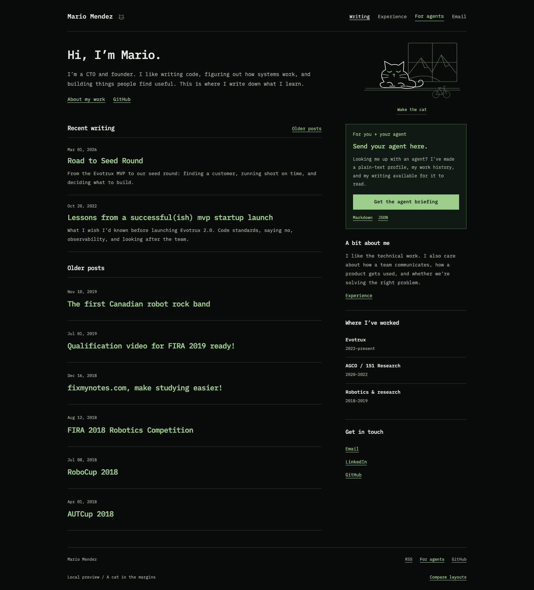
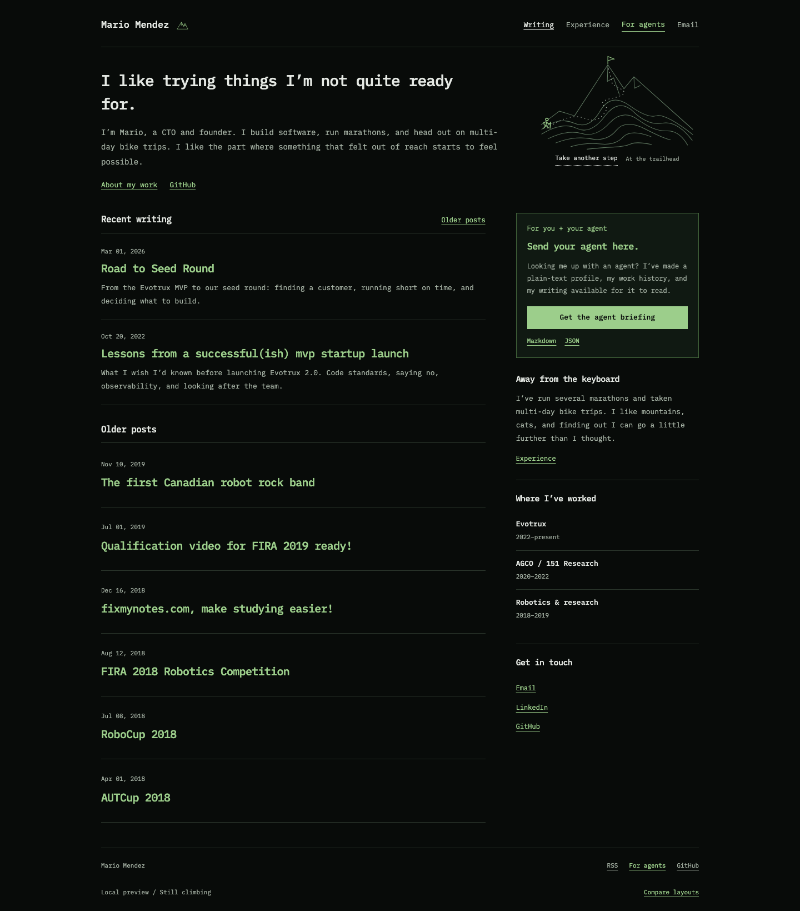
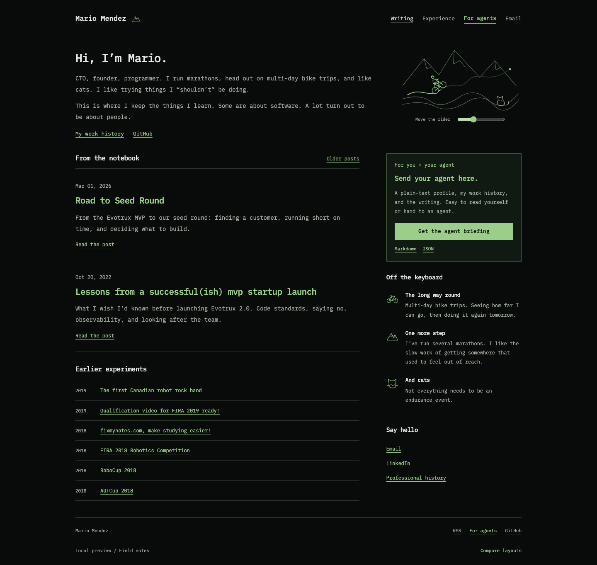

A cat in the margins

A cat has found a spot by the introduction. Wake it and its eyes follow your pointer. A small bicycle leans against the window. The rest of the page stays quiet.
Visit the catCats, long rides, mountains, and finding out you can go further than you thought. Four variations on the blog you picked: two small additions, then two that give the personal side more room.
The original introduction, writing list, and sidebar stay intact. The illustrations and their controls are added.

A cat has found a spot by the introduction. Wake it and its eyes follow your pointer. A small bicycle leans against the window. The rest of the page stays quiet.
Visit the catA little bicycle on a winding route. Move the rider up the hills with the slider. It adds a sense of distance and time without turning the page into a sports résumé.
Follow the routeProposed introductions and personal sections. The original posts and professional history are preserved.

A mountain, contour lines, and a trail taken one step at a time. The introduction talks about software, marathons, and multi-day rides. The sidebar gives life outside work a place.
Take another step
A candid introduction, a compact archive, and an “Off the keyboard” sidebar. Bicycles, mountains, and cats all get a small place. This is the most personal of the four.
Open the notebook“Still climbing” gives the endurance and growth idea a clear place without taking over the writing. “A cat in the margins” is the lightest change and adds warmth. I’d choose one as the main direction, then consider one small detail from the other.
All drawings are SVG. The routes and mountains are illustrations, not records of a specific trip. The controls work with a keyboard, and the page remains readable without JavaScript.